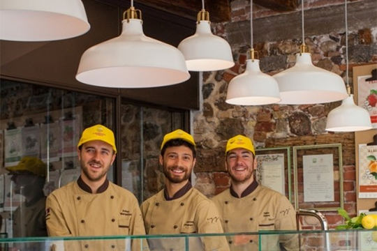

Dalla stalla alla coppetta, le fattorie scoprono il business del gelato. Del resto che gli italiani avessero già una vera passione per il freddo dessert artigianale non era una novità: abbiamo la più alta concentrazione di laboratori al mondo. Nel 2015 il settore ha addirittura superato la soglia delle 40mila aziende (+2% sull’anno precedente) annoverate come gelaterie, bar/gelaterie e gelaterie pasticcerie con oltre 150mila addetti. La Lombardia è la regione con maggior presenza di gelaterie. Per l’Associazione Esercenti Pubblici Esercizi Roma (Aeper), ci sono 3mila imprese del gelato con una crescita nel 2014 dell’1,7% e un valore di circa 40 milioni di euro, mentre solo a Milano il trend arriva addirittura al +6% (30 milioni di euro). Seguono Sicilia, Veneto ed Emilia Romagna, poi Lazio, Abruzzo e Molise.
Il gelato artigianale “vale” 2,5 miliardi
E il business del gelato artigianale nel nostro Paese non conosce crisi, con un fatturato di circa 2,5 miliardi di euro (+1% sull’anno precedente), secondo i dati riportati da Coldiretti. Sul mercato nazionale i consumi sono addirittura aumentati attorno ai 6 chilogrammi pro capite, pari a circa 380mila tonnellate, e l’export è in espansione, con ottime prospettive non solo in ambito europeo, ma anche in America e Asia. Ma rilevante è anche l’impatto sull’indotto con l’utilizzo nel 2013 di 220mila tonnellate di latte, 64mila di zuccheri, 21mila di frutta fresca e 29mila di materie prime. Non è difficile così capire perché tante aziende agricole, che dispongono in abbondanza di latte e frutta, abbiano deciso di differenziare il proprio business proprio in questo settore e sfuggire al contempo alle speculazioni sulle materie prime, spesso sottopagate dal mercato.
Un gelato rigorosamente stagionale
Da quando il progetto ‘Campagna Amica’ di Coldiretti per promuovere una filiera agricola tutta italiana ha abbracciato la filosofia del gelato a Km0, le fattorie che hanno deciso di impiegare la propria materia prima per la produzione di gelati sono andate via via aumentando e oggi se ne contano più di cento in tutta Italia. «Nelle agrigelaterie – sottolinea Coldiretti – è particolarmente curata la selezione degli ingredienti, dal latte alla frutta, che sono rigorosamente freschi con gusti a ‘chilometri zero’ perché ottenuti da prodotti locali che non devono essere trasportati con mezzi che sprecano energia e inquinano l’ambiente». Spesso, peraltro, alle agrigelaterie sono associati laboratori di gelateria dove è possibile assistere alla trasformazione del latte in gelato con la spiegazione, ma sono realizzate anche visite guidate per far vedere alle scolaresche tutto il processo di trasformazione, dalla stalla con la mungitura degli animali alla preparazione finale. Va da sé che i gusti dei ‘gelati degli agricoltori’ seguano l’andamento delle stagioni: in primavera e in estate trionfano quelli di frutta, come anguria, fragole e frutti di bosco, mentre in autunno si punta su castagne e agrumi, senza dimenticare i tradizionali fior di mucca (puro latte italiano). C’è anche chi prova quello alla polenta, al grana padano e al vino.
I pionieri a Poirino
La pioniera delle agrigelaterie, nata nel 2001, è comunque San Pè di Poirino in provincia di Torino che produce gelati freschi da latte di vacche di razze frisona, pezzata rossa e bruna alpina. Da questa, nella persona della signora Antonietta, è anche stato coniato il termine ‘agrigelateria’ per «spiegare ad un’amica cosa avessimo intenzione di fare» precisa. ‘San Pé’ è invece il nome dialettale della Cascina San Pietro, collocata sulle alture in affaccio al torrente Banna e all’abitato di Poirino, ove un tempo sorgeva il monastero di San Pietro di Lomellina. «In queste terre – spiegano in azienda – abbiamo deciso di trasformare una parte del ‘Latte Alta Qualità’ della nostra vivace azienda agricola e la frutta dei nostri frutteti in un gelato di eccellenza e di servirlo in un luogo caloroso e familiare. Una tettoia immersa nel verde è stata così trasformata un po’ a ‘giardino d’inverno’ e un po’ a ‘salotto della nonna’, dove gustare un gelato veramente unico». Tra i suoi principi quello della produzione propria, della lavorazione artigianale realizzata grazie alle migliori tecnologie senza coloranti o conservanti aggiunti, curando tutto nel dettaglio a partire dalle sue strutture verso l’ecologia, il rispetto dell’ambiente e l’educazione, trasformandosi anche in fattoria didattica per ospitare gruppi e scolaresche.Un marchio ormai famoso nel mondo e i suoi gelati si trovano anche da Eataly. A dieci anni dall’apertura dell’agrigelateria, poi, sulla collinetta adiacente è stato costruito il ‘Teatro San Pé’, che dal 2011 ospita la manifestazione culturale Iscream, festival di musica, buon cibo, e naturalmente gelato.

La gelateria del Papa
Tra le prime gelaterie ad utilizzare il logo Campagna Amica c’è invece Officina Gelato Gusto Italiano ‘Oggi’ a Udine, salita recentemente alla ribalta delle cronache per essere diventata la fornitrice ufficiale del papa: è l’unica gelateria d’Italia incaricata dalla Santa Sede per produrre gelato. Ai tre titolari Carmelo Chiaramida, Andrea Marche e Fabio Pironi lo scorso luglio è stato, infatti, chiesto dal Vaticano di preparare il gelato, in occasione del primo incontro del Papa con i 100 sindaci più importanti del mondo. E loro lo hanno fatto seguendo i basilari principi che li hanno sempre guidati: utilizzando cioè solo materia prima di altissima qualità, prodotti a km zero e di stagione della rete di Campagna Amica. Inoltre, tutto il materiale che utilizzano è rigorosamente biodegradabile e con certificazione Fsc (la materia prima usata per realizzare un prodotto in legno o carta proviene da foreste dove sono rispettati dei rigorosi standard ambientali, sociali ed economici).
Ma i titolari di Oggi non sono nuovi a varcare le mura pontificie. C’erano in occasione della visita della regina di Svezia e del segretario generale dell’Onu, Ban Ki-moon e ancora nel dicembre del 2014 in occasione delle visita al Papa delle comunità religiose più importanti al mondo. Oggi ha da poco aperto anche un secondo locale a Varese. Una realtà che ha saputo innovare nella tradizione, per questo lo scorso luglio è stata premiata da Coldiretti Friuli Venezia Giulia con l’Oscar Green per la categoria Fare rete. Il loro segreto? «Mettere tutto a vista – spiegano – il laboratorio è dietro una vetrata e spesso i clienti si mettono ‘in finestra’ a vedere come facciamo il gelato. Questo è importante perché è un modo per avvicinarci alla gente efidelizzarla».